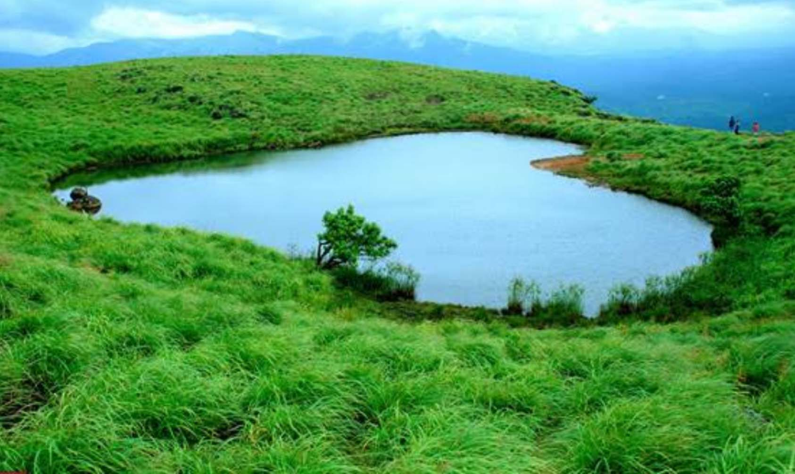
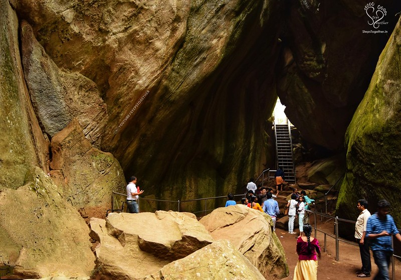
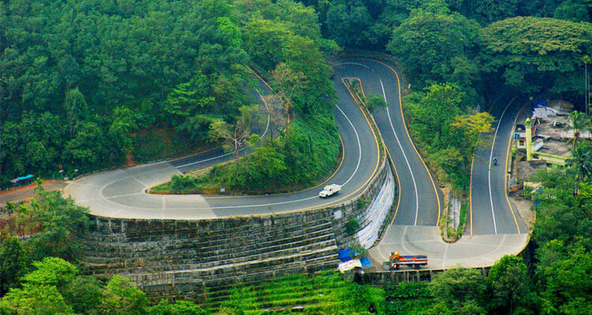

Rain Resort

Rain Country Resorts is Located in the verdant misty hills of Rain Forest at Lakkidi in Wayanad. The Resort is 1300 m above the sea level and It is one of the highest rain fed area in India, thus it is one of the coolest place in God’s Own Country. Rain Country Resorts is spread over 22 acres of land situated in a valley between three hills and surrounded by thick tropical vegetation. The number of cottages is 21 and is restricted in order to preserve the sanctity and serenity of the natural beauty. Rain country Resorts invites you to submerge in the ambience and serenity of its dark woods coupled with music of the natural stream and varied birds. The natural green surroundings and tranquil setting is an idyllic location for the perfect retreat..
Edakkal Cave

The Edakkal caves are two natural caves at a remote location at Edakkal, 25 km from Kalpetta in the Wayanad district of Kerala in India.
They lie 1,200 m above sea level on Ambukutty Mala, near an ancient trade route connecting the high mountains of Mysore to the ports of the Malabar Coast.
Edakkal is the only known place for stone age carvings in South India. The carvings belonging to Neolithic and Mesolithic Age include ancient stone scripts, ancient weaponry figures, symbols, figures of various animals and human beings etc.
The entry fee for visiting Edakkal Caves is Rs 20 per person for adults and Rs 10 per person for child. The charges for foreign tourists is Rs 40 per person.
Lakkidi

Lakkidi View Point is a tourist destination often referred to as the “Gateway of Wayanad.” It is known for its mesmerising bird’s eye view of Wayanad. And it’s a must-visit place for nature lovers and adventure enthusiasts.
From the viewpoint, you can get breathtaking views of the rolling hills, lush green valleys, and hairpin bends. You can savour the magnificent vista that surrounds Wayanad.
The beauty of Lakkidi View Point Wayanad can be best experienced on a misty day. As clouds hover over the hills, they create a surreal and dreamy atmosphere. And on a clear day, you can get a sweeping view of the peaks and valleys. You’ll see a spellbinding green carpet.